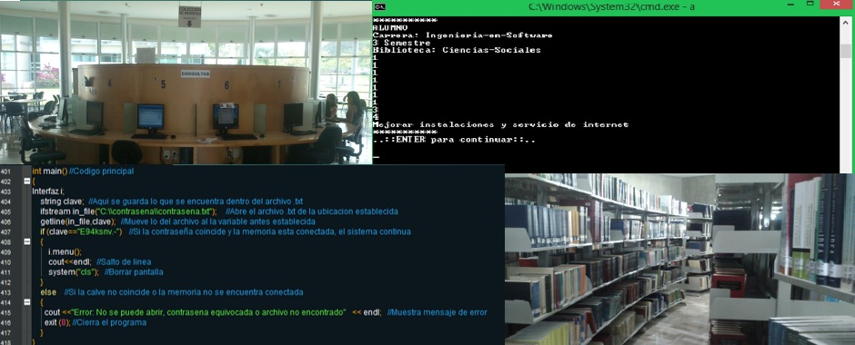
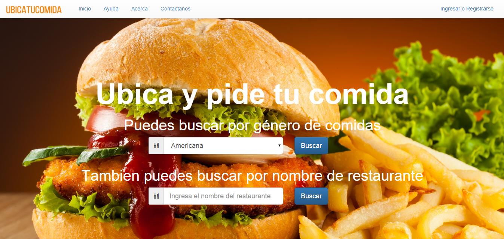
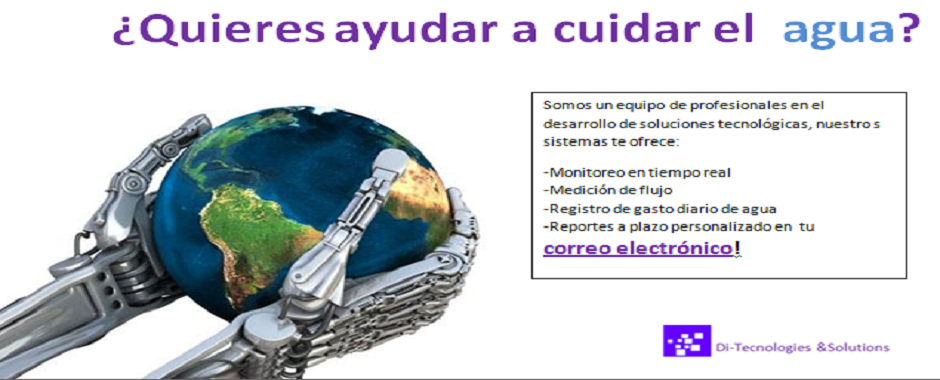

Con este programa se puede recopilar y administrar datos referentes al servicio que brindan las Bibliotecas de la Universidad de Colima, esto con el fin de mejorar.

Página web donde los restaurantes del estado de Colima pueden anunciar sus platillos, complementos, bebidas, etc. El público en general puede buscarlos y ordenar lo que ellos ofrecen. Los restaurantes podrán ver los pedidos y de una manera simple atenderlos.

Este proyecto recopila la cantidad de agua utilizada durante un día en algún edificio, si se gasta más del límite establecido se manda una alerta a las personas encargadas.
Con este programa se puede recopilar y administrar datos referentes al servicio que brindan las Bibliotecas de la Universidad de Colima, esto con el fin de mejorar.
Página web donde los restaurantes del estado de Colima pueden anunciar sus platillos, complementos, bebidas, etc. El público en general puede buscarlos y ordenar lo que ellos ofrecen. Los restaurantes podrán ver los pedidos y de una manera simple atenderlos.
Este proyecto recopila la cantidad de agua utilizada durante un día en algún edificio, si se gasta más del límite establecido se manda una alerta a las personas encargadas.

Ingeniería en Software por parte de la Facultad de Telemática en la Universidad de Colima.
Design by Edsel Barbosa